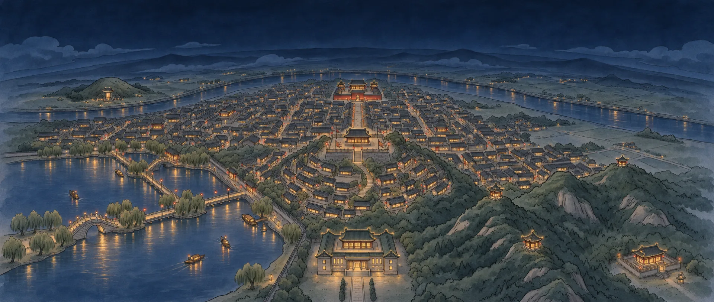
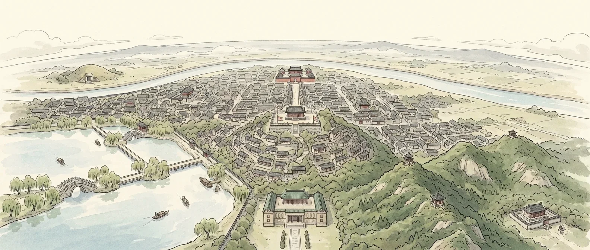
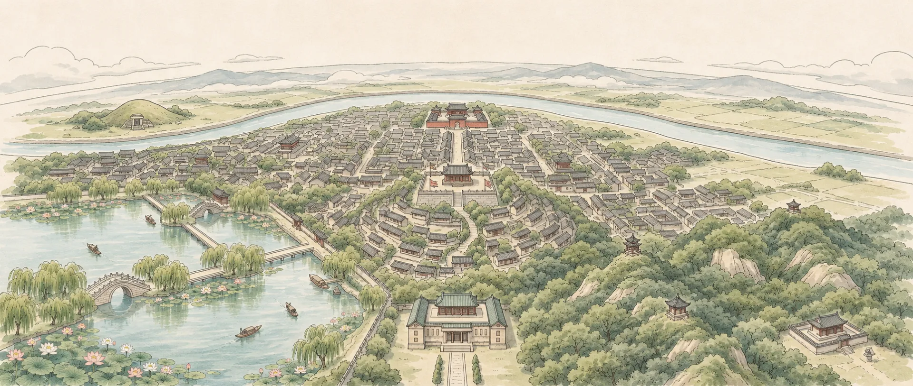
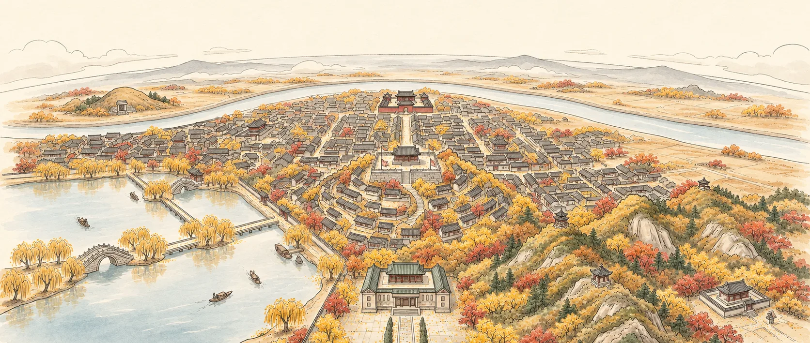
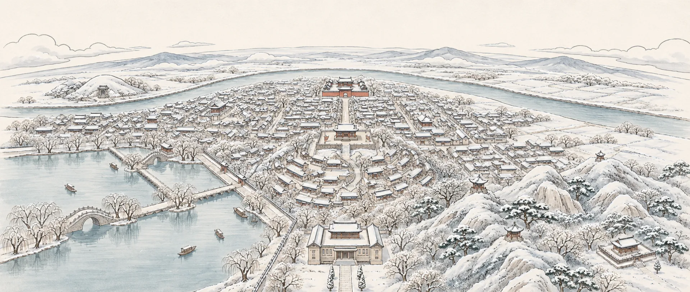

2200 YEARS · PENGCHENG CHRONICLE
一座彭城 半部汉史 九处人间夜色
两千二百年的楚汉风云并未远去。云龙山九节蜿蜒，故黄河穿城而过——自秦末项羽戏马的高台，至西汉楚王凿山为藏的地宫，再到青瓦灯火的古城深巷，九处彭城在夜色中缓缓展开。
NINE LANDMARKS · 壹至玖
九处彭城
依时间与城脉由壹至玖次第展开。轻点任一画幅或拓本，入画细读两汉风物与实时导览。
HAN TREASURES · 汉代三绝
汉墓 · 汉兵马俑 · 汉画像石
徐州的汉代遗存里，这三样最常被并称为“汉代三绝”。轻拂画幅提灯窥地宫与军阵，亲手拓印一张东汉画像石。
WAYFINDING · 彭城流金舆图
站内实景路线导览
按徐州真实地理坐标与轨道脉络绘制。任选起终点、主题精品线或一日多站行程，在网页内直接启动镜头跟飞的分段实景引导。
单程精导 · 任选起终
一日拼程 · 自由排期并同步至舆图
轻点地标加入或移出行程，用 ↑ ↓ 调整次序；排好后一键投射到「实景舆图」开启多站连贯引导。
徐州轨道交通 1 / 2 / 3 号线简图
地图加载徐州真实中文街道暗夜路网，叠加九处汉文化地标、轨道 1/2/3 号线及 22 段双向精细站内模拟引导；支持拖拽漫游与定位出发。